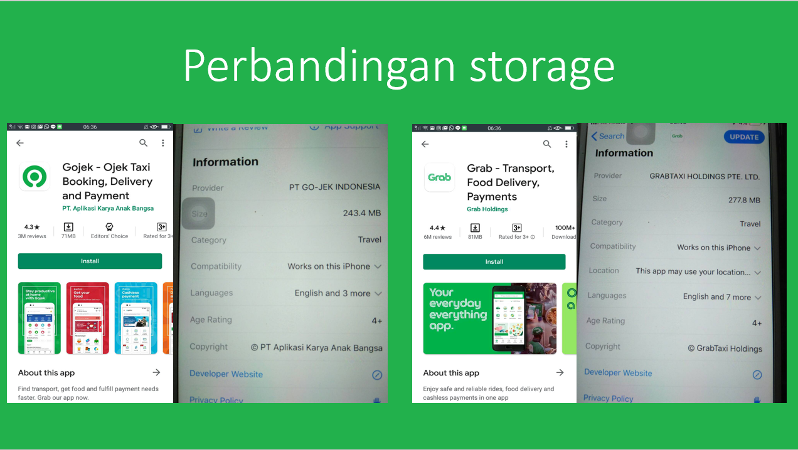

Hasil Analisa SQA
GRAB dan GOJEK
Nama : Albari Berki Pradhana
NIM : 1806384
Software update : 13 oktober 2020
Pada analisis SQA ini akan saya paparkan hasil analisa saya terhadap 2 software
yang memiliki fungsi maupun cara penggunaan yang serupa.
software tersebut yaitu Grab dan Gojek.
Metode analisis yang saya gunakan mengacu pada faktor McCall.
Perangkat yang saya gunakan pada penelitian ini yaitu :
Saya menggunakan kedua perangkat diatas mengingat bahwa
platform ANDROID dan IOS merupakan 2 sistem operasi
yang umum digunakan oleh masyarakat di Indonesia.
Berikut sekilas pengenalan dari kedua software :
Adapun faktor McCall yang saya gunakan sebagai pembanding
adalah sebagai berikut :
Berikut adalah hasil analisa faktor Efficiency :
Pada faktor ini, saya membandingkan efisiensi eksekusi
dimana yang saya bandingkan yaitu kecepatan loading screen
hingga mencapai bagian landing awal dari software(login/register).
saya pun membandingkan efisiensi storage dengan memperhatikan
penggunaan memory sebelum penggunaan.

Terlihat bahwa pada kedua sistem operasi, penggunaan storage dari
GOJEK lebih efisien.
Namun, dengan penggunaan storage yang lebih besar,
waktu eksekusi menunjukan bahwa GRAB lebih cepat 4 detik dalam
pengaksesan hingga masuk ke bagian login/register.
Berikut adalah hasil analisa faktor Correctness :
Pada faktor ini, saya membandingkan selisih waktu update,
kelengkapan data penjual, dan kebenaran output posisi pengemudi.
Pada bagian update history dari kedua software dapat terlihat
bahwa masing- masing memiliki selisih update yang berbeda.
Adapun kelengkapan penjual dari kedua software masih memiliki
1 kekurangan yaitu nomor kontak dari toko/seller/penjual.
Hal ini akan mempersulit proses komplain bagi pembeli ke penjual.
Namun saya berasumsi bahwa hal ini dilakukan untuk menjaga proses
transaksi agar tetap sesuai aturan dengan langsung mengarahkan
pembeli ke nomor call center dari kedua software.
Output posisi yang ditampilkan oleh kedua software tidak jauh berbeda
meskipun dalam proses pengujiannya, GRAB memberikan output
yang lebih baik.
Berikut adalah hasil analisa faktor Flexibility :
Pada faktor ini, saya membandingkan generality dari sisi
tampilan keseluruhan dimana kedua software menghadirkan
tampilan yang cocok untuk semua usia.
Perbandingan kedua software dari sisi expansibility pada bagian
penambahan detail order pembeli pun sudah baik.
Berikut adalah hasil analisa faktor Interoperability :
Pada faktor ini, saya membandingkan modularity kedua software
yang sangat disayangkan pada GOJEK, tampaknya
fitur multiple register option sudah dihilangkan. Di sisi lain,
GRAB masih menghadirkan fitur tersebut dengan adanya fiturregister with FACEBOOK.
Perbandingan selanjutnya adalah kesamaan data setelah logout
yang tidak menunjukan perubahan apapun di kedua software.
Berikut adalah hasil analisa faktor Reliability :
Pada faktor ini, saya membandingkan sub faktor dengan
bobot tertinggi yaitu akurasi auto translate message
yang digunakan oleh kedua software. pada hal ini perlu
diingat bahwa komunikasi merupakan hal yang saya anggap
paling penting dalam penyampaian pesanan baik terhadap toko
maupun pengemudi yang akan mengantar pesanan.
dan fitur yang digunakan pada kedua software masih kurang membantu
dalam komunikasi tersebut. Namun hal ini dapat menjadi tantangan
dari sisi pengembangan software untuk membuat API auto translate
yang lebih akurat dan sesuai dengan pengguna di Indonesia.
Pinpoint dari rumah pembeli yang belum cukup mendekati alamat
asli pembeli dari kedua software dapat teratasi dengan
fitur penulisan alamat secara manual, dan fitur ini sudah dimiliki
oleh kedua software sehingga saya memberikan nilai yang baik bagi
kedua software.
toleransi kesalahan masukan kode OTP pada kedua software sudah baik
dan tidak menjadi suatu masalah yang dapat mengganggu pengalaman
penggunaan software masing-masing.
Berikut adalah keismpulan dari hasil analisa saya :
Dari hasil analisa secara keseluruhan, GRAB terlihat lebih unggul.
Namun, dapat terlihat pada bagbian faktor Reliability, GOJEK lebih unggul.
Sehingga dengan ini saya dapat menarik kesimpulan bahwa kedua aplikasi
masih memiliki ruang untuk meningkatkan keunggulannya masing-masing.
Tidak dapat dipungkiri pula, bahwa penilaian ini bersifat subjektif,
sehingga di masa yang akan datang sangat besar kemungkinan adanya
perbedaan pendapat dan tentu saja persentase diatas suatu saat pasti
akan ada perubahan yang akan saya analisa kembali di masa yang akan datang.
Referensi:
Daniel Galin, “Software Quality Assurance, From Theory to Implementation”.
https://romisatriawahono.net/2006/06/05/teknik-pengukuran-kualitas-perangkat-lunak/